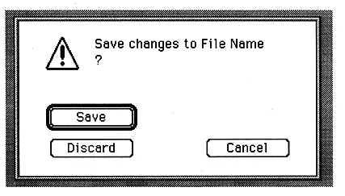
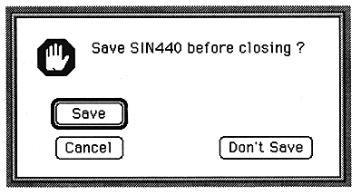

OK
Close the window.
Save
Save the file.
Cancel
Return to the edit window.
If you make changes and try to close without saving, a warning window will appear.

Cancel
Cancel the window close.
Don't Save
Close the window without saving.
Save
Close the window after saving.